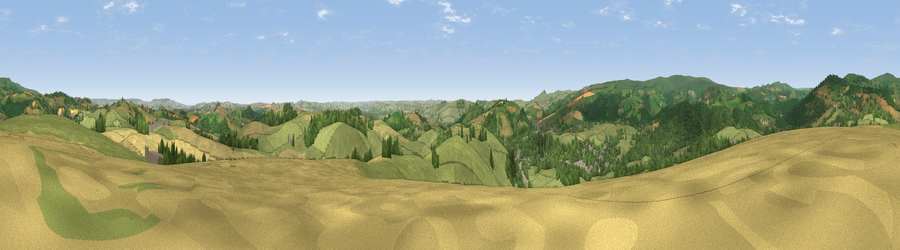

Chuley Hill
#8229 in England · top 17% of its area beats it · near AshburtonThe view, rendered

A 360° render of this exact spot computed from the terrain model, tree cover and land cover — summer colours, afternoon light, calibrated against photographs of famous viewpoints. Real trees, hedges and buildings will differ in detail.
The panorama
Grey silhouette: terrain skyline in each direction (720 bearings, Earth curvature and refraction included). Dashed green: skyline with trees (+15 m) and buildings (+8 m) as obstacles. Blue strip: how far the ground is visible on each bearing.
Where the view opens
Wedge length = distance to the farthest visible ground on that bearing (vegetation-aware). Rings at 10, 25 and 50 km.
What fills the view
59% grassland · 27% woodland · 13% cropland · 2% built-up
Angular shares of the visible panorama (visual magnitude), not map area. Landscape diversity 0.43 (0–1 Shannon).
Key numbers
More beautiful places nearby
The staircase of upgrades: each row has a higher view potential than everything closer. Driving times are estimates from straight-line distance, calibrated against real road routing — check an actual route before setting out.
| Place | Direction | Drive | Score |
|---|---|---|---|
| Viewpoint near Combe | WSW · 5 km | ~11 min | 69.5 |
| Viewpoint near Buckland in the Moor | N · 5 km | ~11 min | 70.5 |
| Viewpoint near Buckland in the Moor | NNW · 5 km | ~11 min | 80.7 |
| Beacon Hill | ESE · 12 km | ~23 min | 82.3 |
| Viewpoint near Stokeinteignhead | E · 17 km | ~30 min | 84.1 |
| Viewpoint near Hope | SSW · 30 km | ~47 min | 84.4 |
| Viewpoint near East Prawle | S · 32 km | ~50 min | 84.6 |
| High Peak | ENE · 39 km | ~58 min | 85.3 |
50.50052, -3.75881 · source: dobih hill · position refined by local search. Computed location — check access rights before visiting.